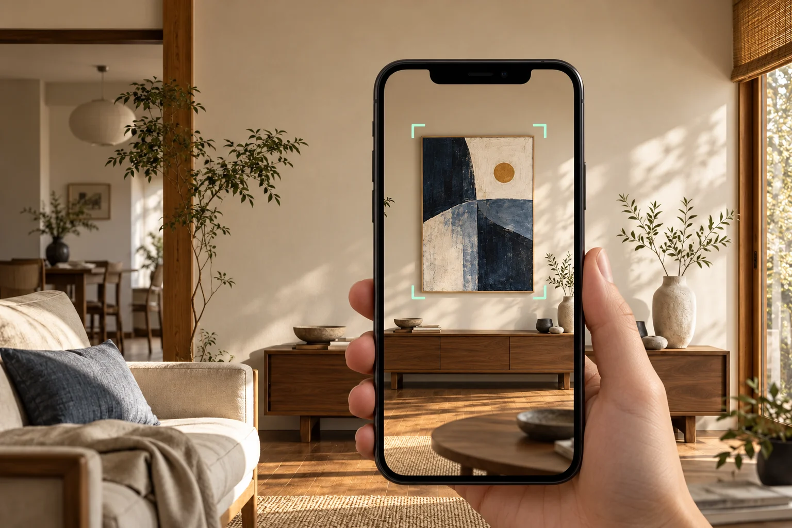
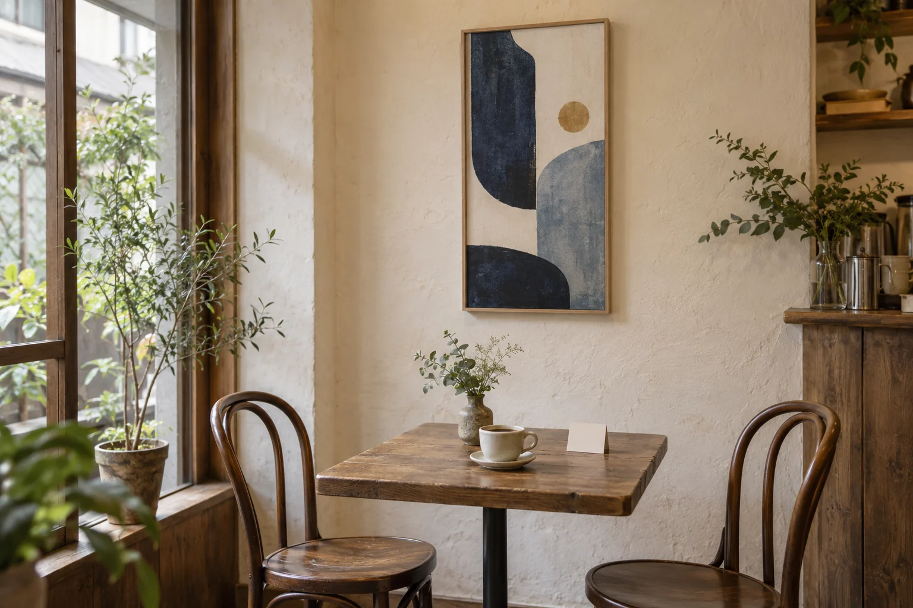
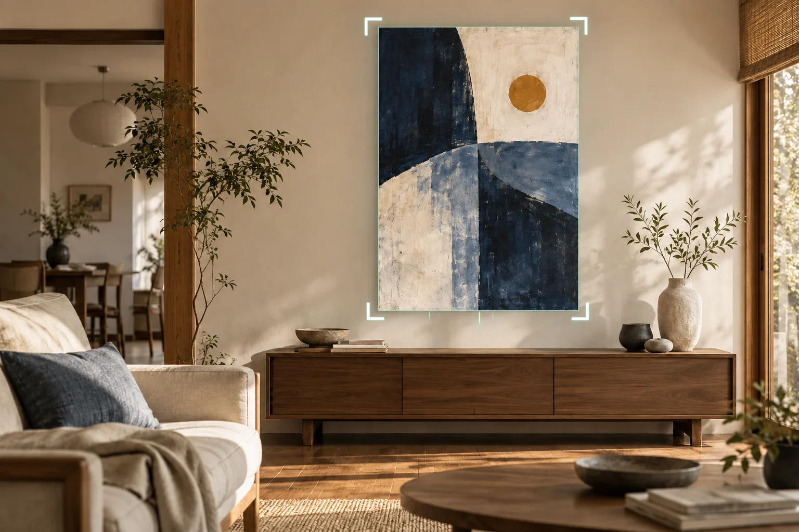
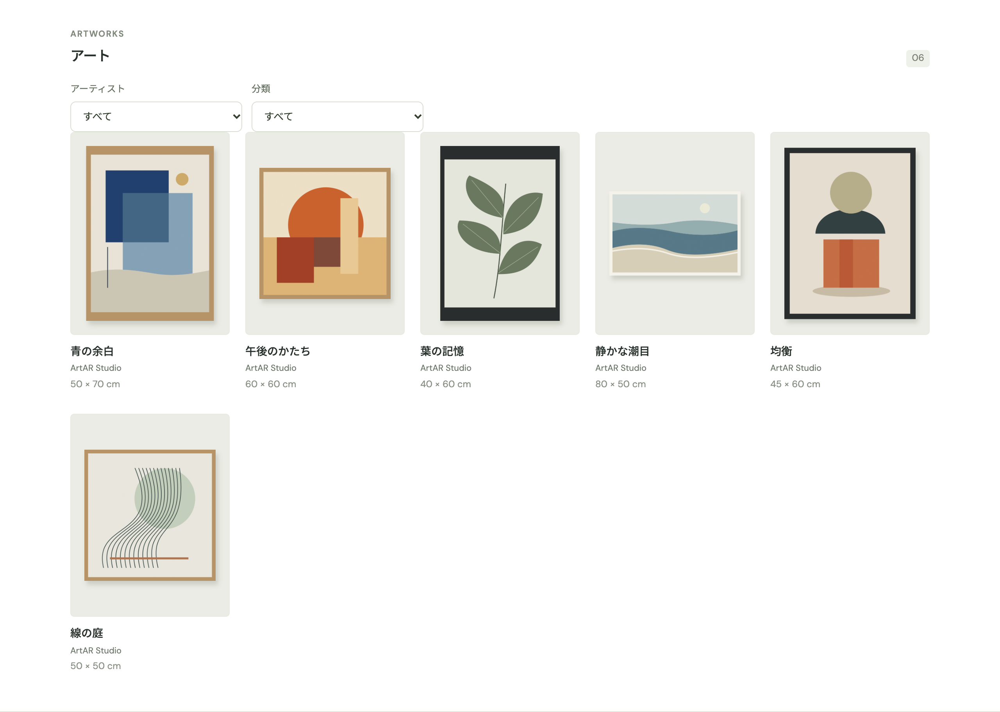

作品の作者
アーティスト
作品データを登録
発行されたQRを保存
アーティストのためのARギャラリー
作品を見つけた人に、
自分の部屋へ飾ってみる体験を。
今の販売先を生かしながら、実寸のAR展示をお客様へ。自宅で飾るイメージを、購入検討につなげます。
デモの体験方法を見る 利用について相談するAR体験には対応するスマートフォン・タブレットが必要です。

「好き」の、その先へ
「この大きさ、うちの壁に合うだろうか。」
「お店で見たあの作品を、もう一度見たい。」
作品の写真だけでは伝わりにくいサイズ感。
展示の場を離れると、途切れてしまう接点。
ArtARは、作品を自宅の壁に飾って確かめる体験を届けます。あなたの作品を、購入を考える人の暮らしへ近づける、新しい入口です。
01 / お店での出会いから
FROM THE CAFE TO HOME

アーティストが作品をArtARに登録し、発行されたギャラリーQRを店頭へ。来店者はQRからArtARの体験ページを開き、自宅でARの試し飾りを体験します。
作品の作者
作品データを登録
発行されたQRを保存
作品データを登録登録
ギャラリーQRを発行QR発行
アプリ・サービス
作品管理・QR発行
体験ページ AR機能
実物作品と
QR付き案内を届ける実物作品と
QR付き案内
QRから
体験ページを開くQRから
ページへ
AR機能を
提供AR機能
展示の場
実物作品を展示
QR付き案内を掲示
作品展示・QRで案内展示・
QR案内
そのお店のお客様
QRからArtARへ
自宅の壁でARを体験
作品登録とQR発行アーティストがArtARに作品データを登録。ArtARが発行したギャラリーQRを保存します。
店舗へ届けるアーティストが実物作品とQR付き案内を店舗へ届けます。
展示から体験を案内店舗が作品を展示し、そばにQR付きの案内を掲示します。
ArtARの体験ページからARへ来店者がQRから体験ページを開き、ArtARのAR機能で自宅の壁に作品を飾ります。URLを保存すれば、あとからも開けます。
02 / オンラインの出会いから
ご自身のサイトや外部販売サイトにArtARへのリンクやQRを添え、作品を見つけた人をARの試し飾りへ案内できます。美術商の作品紹介・購入相談ページからも案内できます。
ARで確かめた作品から、既存の販売・相談窓口や作家情報へ、リンクで案内できます。
ご自身のサイト / 外部販売サイト / 美術商の作品紹介・購入相談ページ
リンク掲載が可能な場所からご案内ください。購入手続きはリンク先で行います。

写真が、作品への道しるべに
ARで飾った様子は、写真に残せます。部屋との相性を見返したり、家族と相談したり。作品を選ぶ時間を、家の中でゆっくり持てます。
作品名や作家名、寸法とともに、条件を満たす作品には購入先QRが付きます。保存した写真から、登録された購入先を開けます。
販売先QRは、販売中で有効な購入URLが登録された作品に表示されます。
ひとつのQRに、作品との出会いをまとめる
YOUR AR GALLERY
作品をギャラリーに並べ、URLとQRでまとめて案内。
一枚だけでは伝えきれない、あなたの世界を届けられます。

01 / MY COLLECTION
全作品を紹介したり、テーマごとに選んだ作品を並べたり。名刺やご自身のサイトに、ギャラリーのURLやQRを添えられます。
02 / GROUP EXHIBITION
参加作家から共有された作品をまとめ、合同展のARギャラリーに。ひとつのQRから、それぞれの作品と作家へつながります。
03 / POP-UP GALLERY
イベント情報や会期を添えて公開。会期後も案内を続ける場合は、公開期限を延長するか解除します。
アーティストの準備は、管理画面から
画像、作品名、寸法を登録。販売サイトやご自身の情報へのリンクも添えます。
作品をセットで整理し、ギャラリーに並べます。公開する作品や販売状態は、あとから管理できます。
ギャラリーを公開してQRを保存。展示の案内や名刺、サイトに添えて、お客様へ。
管理画面の利用は招待制です。利用について相談する
招待済みの方はこちらQUESTIONS & ANSWERS
いいえ。現在の販売先を生かし、作品ページや展示にArtARへのリンクやQRを添えて案内できます。作品に購入先URLを登録すると、その販売ページへお客様を案内できます。購入手続きはリンク先で行います。
作品の閲覧やAR体験に、アカウント登録やログインは不要です。ARには対応するスマートフォンやタブレット、カメラの利用許可が必要です。ご利用の端末に応じて開始方法をご案内します。壁の状態や明るさによって、認識しにくい場合があります。
はい。共有された複数作家の作品をギャラリーに並べ、ひとつのURLとQRで案内できます。イベント情報や公開期限も設定できます。会期後も体験を届けたい場合は、公開期限を延長・解除してご利用ください。
作品が販売中で、有効な購入URLが登録されている場合です。ギャラリーのQRが作品群を開く入口になるのに対し、写真に付くQRはその作品の販売サイトへつながります。
管理画面は招待制です。運営者へメールでご相談ください。招待を受け取った方は、メールからパスワードを設定して利用を始められます。